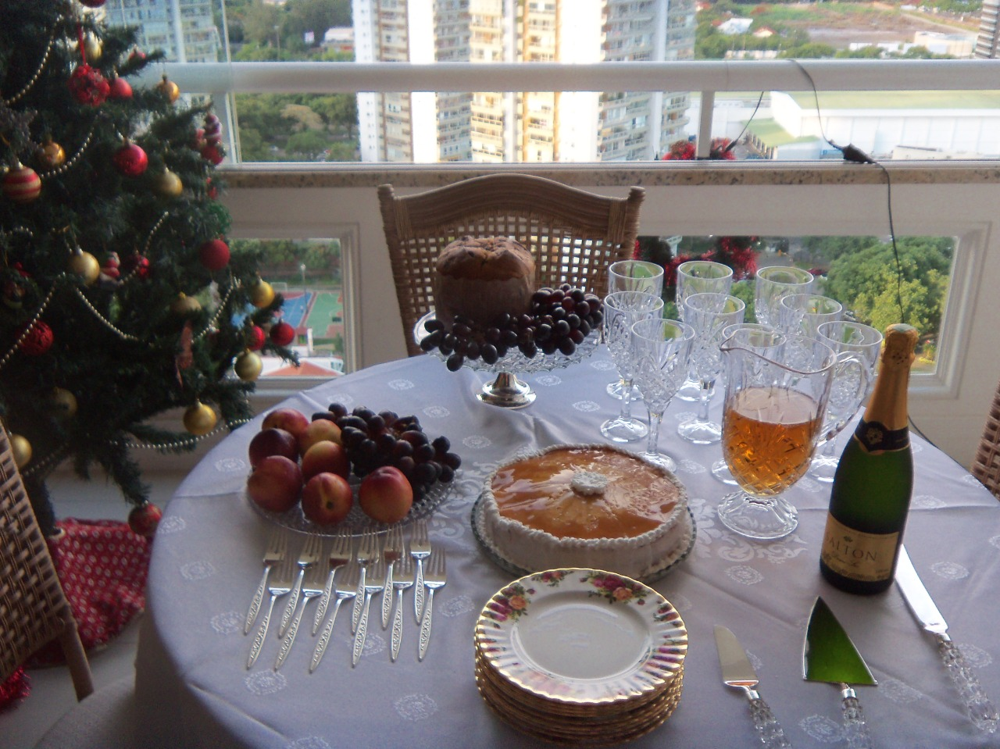

Caramel Pie

A caramel pie perfect for Christmass dinner!
This pie is made in 25 cm sheet discs. It also comes with a ring with the same dimensions.
Ingredients
- 4 egg yolks
- 40 grams of sugar (3 tablespoons)
- 4 beaten egg whites
- 90 grams of wheat flour (7 tablespoons)
Steps
- Beat the egg whites, adding the sugar; continue to beat while add the rest of the ingredients;
- Coat the discs with butter, pulverizing them with wheat flour (they are covered with a thin layer of 3 millimeters expressing paste);
- It goes in the hot oven quickly until it browns a little;
- When still hot, remove from the plate, cutting off any excess dough with the ring (9 disks are required);
- The most perfect disk of dough should be reserved to be covered with caramels;
- The remaining 8 are covered with chocolate cream, placing them on top of each other and spreading the same cream around;
- To caramelize: mix the butter, sugar, vanillin and egg well. Melt the chocolate in a bain-marie mixing it with the dough;
- Place the reserved dough disc on the table, add butter to the board, mark the 16 parts into which the pie is divided around it;
- Place 200 grams of sugar in a pan and let it melt over low heat, always stirring until it turns golden brown;
- Then cover the disc of the dough that has been reserved with a thin layer of caramel;
- To spread the caramel, use a buttered knife;
- With another knife greased with butter, make the marks on the caramel, following the measurements that were made on the table. All this must be done quickly before the caramel cools;
- It is placed on the pie and decorated with whipped icing and a cherry nozzle n°18;
- To make whipped icing: Beat 1 egg white, mix 1/2 tablespoon of lemon juice and sifted sugar, until it forms a thick glaze that does not fall off the spoon when you lift it;